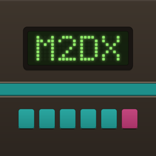
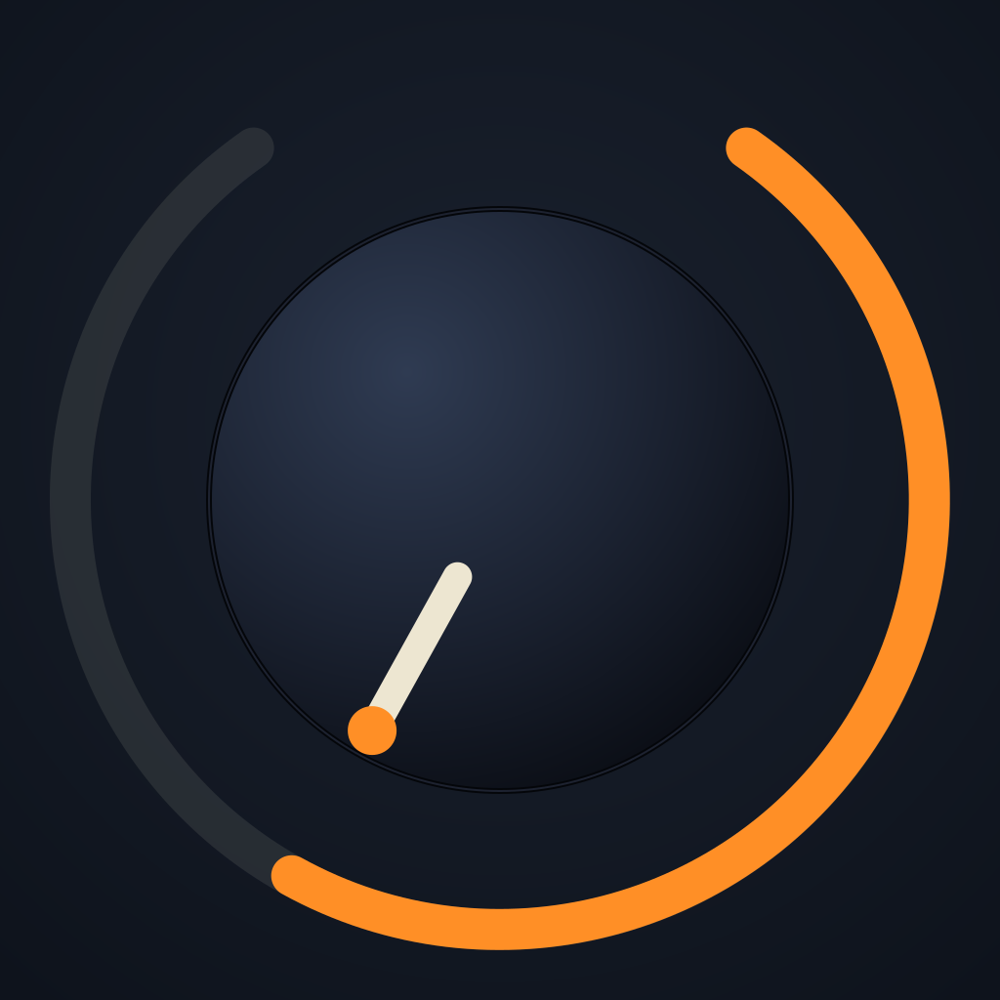
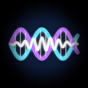
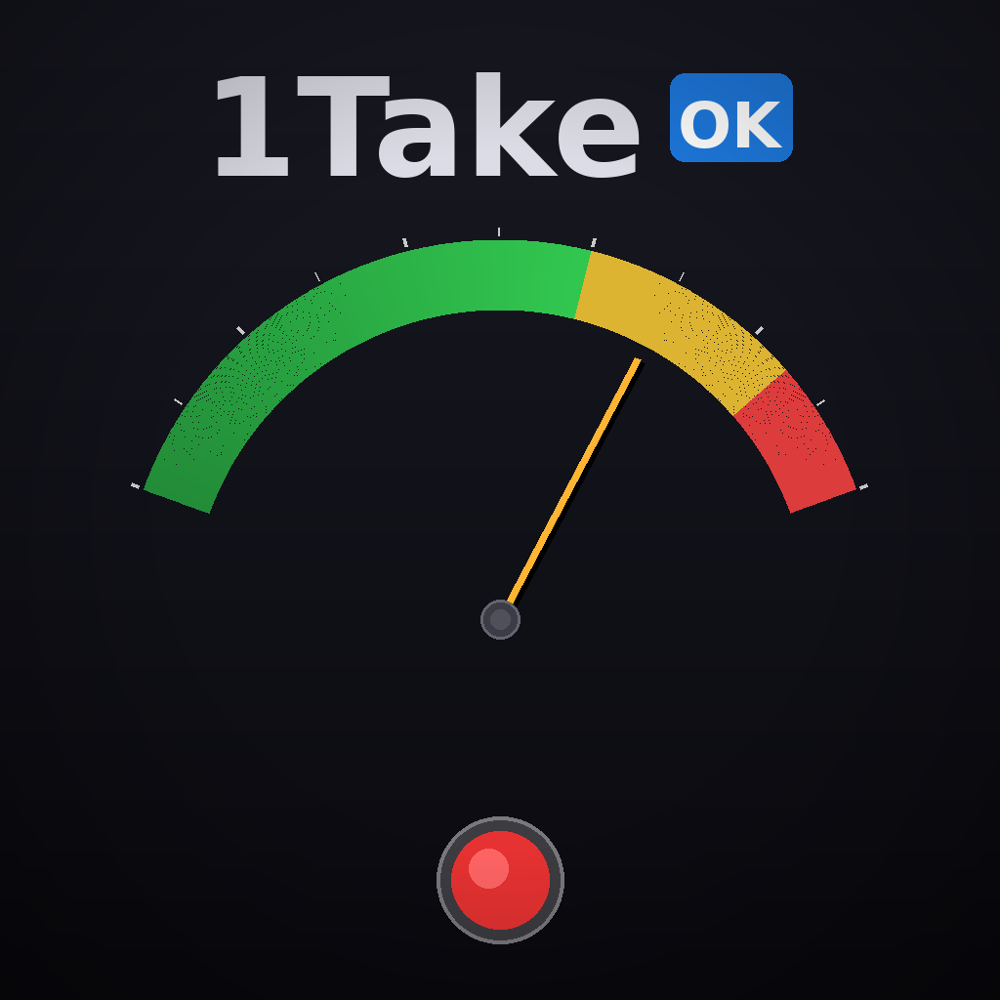
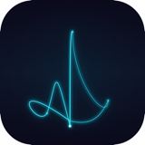

Accurate Piano
iPhone · iPad
Un piano à queue pour iPhone et iPad. Jouez sur le clavier à l’écran ou un clavier MIDI, et réglez le toucher, la résonance, l’égalisation et la réverbération.
Des apps pour la musique et le quotidien.
iPhone · iPad
Un piano à queue pour iPhone et iPad. Jouez sur le clavier à l’écran ou un clavier MIDI, et réglez le toucher, la résonance, l’égalisation et la réverbération.

Musique • Synthétiseur
Synthétiseur FM compatible MIDI 2.0 + DX7 pour iOS. 6 opérateurs × 32 algorithmes, polyphonie 16 voix, chaîne d'effets en 6 étages, 32 presets d'usine et un plug-in AUv3.

Musique • Synthétiseur
Synthétiseur de modélisation analogique polyphonique 12 voix pour iPhone et iPad. Application autonome + Audio Unit AUv3 — fonctionne avec AUM, GarageBand et plus encore.
Musique • Synthétiseur
Synthétiseur de piano électrique Rhodes par modélisation physique. Pas d'échantillons — pure physique. Vibration de poutre Euler-Bernoulli, capteur électromagnétique et marteau de contact Hertz en temps réel.
Mac
Un égaliseur pour tout le son du Mac. Réglez le son depuis la barre des menus, avec des préréglages associés à chaque périphérique de sortie.
iOS · macOS · AUv3
TwinFET est un plug-in Audio Unit (AUv3) qui recrée le caractère d'un compresseur FET classique pour iOS et macOS. Utilisez-le dans une DAW ou un hôte AUv3 compatible, ou testez-le avec un fichier audio dans l'app hôte autonome incluse.
iPhone · iPad · Mac · AUv3
EraVerb est une réverbération numérique multi-moteurs pour Mac, iPhone et iPad qui fait revivre six époques de matériel de studio classique — des halls somptueux de 1978 au miroitement numérique cristallin de 1999.
iPhone · iPad · Mac · AUv3
P73 est un plug-in d'effet audio AUv3 modélisé sur un channel strip préampli micro/EQ britannique classique, pour iOS, iPadOS et macOS. Il fonctionne dans n'importe quel hôte AUv3 (AUM, GarageBand, Logic Pro, etc.) ainsi qu'en app standalone.

Musique • Processeur Audio
Processeur audio IR/NAM polyvalent avec support de plugin AUv3. Traitez guitare, basse, claviers, synthés, voix via modélisation d'équipement IA et convolution avec traitement faible latence en temps réel.
Musique • Analyse Audio
Outil de mesure audio professionnel pour capturer les caractéristiques sonores d'équipements analogiques. Génère des signaux sweep et analyse la réponse en fréquence pour la modélisation numérique.
iPhone · iPad
BopBot est une app de performance iOS qui génère des solos de jazz dans le style de Charlie Parker en temps réel. Elle joue sur des standards de jazz en générant chaque phrase à nouveau, à partir de la théorie musicale (harmonie linéaire), pour qu'elle s'accorde aux changements d'accords.
iPhone · iPad
AnalogRhythmKing est un instrument rythmique autonome pour iPhone et iPad. Les percussions sont synthétisées en temps réel selon une approche inspirée des circuits, sans échantillons préenregistrés.

Musique • Enregistrement
Application d'enregistrement audio professionnel pour musiciens. Capturez vos répétitions et performances avec un son de qualité studio, des marqueurs intelligents et un traitement d'effets en temps réel.
Musique • Enregistrement • Caméra
Application d'enregistrement pro avec caméra et sync multi-appareils. Capturez audio et vidéo simultanément, synchronisez plusieurs iPhones pour des prises de vue multiples.

Musique • Métronome
Métronome synchronisé P2P pour appareils Apple. Connectez plusieurs appareils au même Wi-Fi pour une synchronisation automatique de l'horloge avec une précision de ±2ms — sans serveur, sans appareil maître. Parfait pour les répétitions de groupe et les performances live.
Musique • Utilitaires
Contrôleur MIDI simple et intuitif pour iOS. Envoyez des messages MIDI à votre logiciel et matériel musical avec des contrôles personnalisables.
Productivité • Outils Développeur
Client kanban GitHub Issues pour iOS. Gérez les tâches sur plusieurs dépôts avec un workflow kanban — Backlog, Prêt, En cours, Terminé. Feuille de partage, widgets et notifications locales.
Utilitaires • macOS
Application macOS pour télécharger tout votre historique de chat LINE.

macOS • Moniteur système
Visualise l'utilisation GPU, la température SoC, le RPM des ventilateurs et la consommation Mac via une icône de marmite dans le Dock. La marmite chauffe avec la charge GPU, devient rouge avec la température, et la vapeur monte avec les ventilateurs. Open source sous Apache 2.0 — Apple Silicon et Intel.
Jeu • Chronométrage
Affronte tes amis dans la même pièce. Arrête le chrono à exactement 10,00 secondes, avec démarrage synchronisé automatiquement sur les iPhones du même Wi-Fi (±2 ms).
Développeur • Open Source
Bibliothèque Swift pour implémenter MIDI 2.0 — UMP, MIDI-CI et Property Exchange. Créez des applications MIDI de prochaine génération pour macOS et iOS.
Développeur • Open Source
Synchronisation d'horloge P2P égale pour appareils Apple. Synchronisez les horloges entre iPhones et Macs à ±2ms sur un réseau local. Sans serveur ni appareil maître. Commandes génériques, partage d'état et planification d'événements précise.
Développeur • Open Source
Moteur de synthèse FM DX7 en Swift pur. Émulation matérielle bit-précise avec arithmétique à virgule fixe Int32, support natif MIDI 2.0 et architecture sans verrou sécurisée en temps réel.

Parodie • Concept
Une cuisine imaginaire pour le Mac Studio avec M5 Max ou M5 Ultra. Un LLM local prépare le menu ; nous imaginons une cocotte au-dessus. L’inférence est réelle, la cuisson inventée.